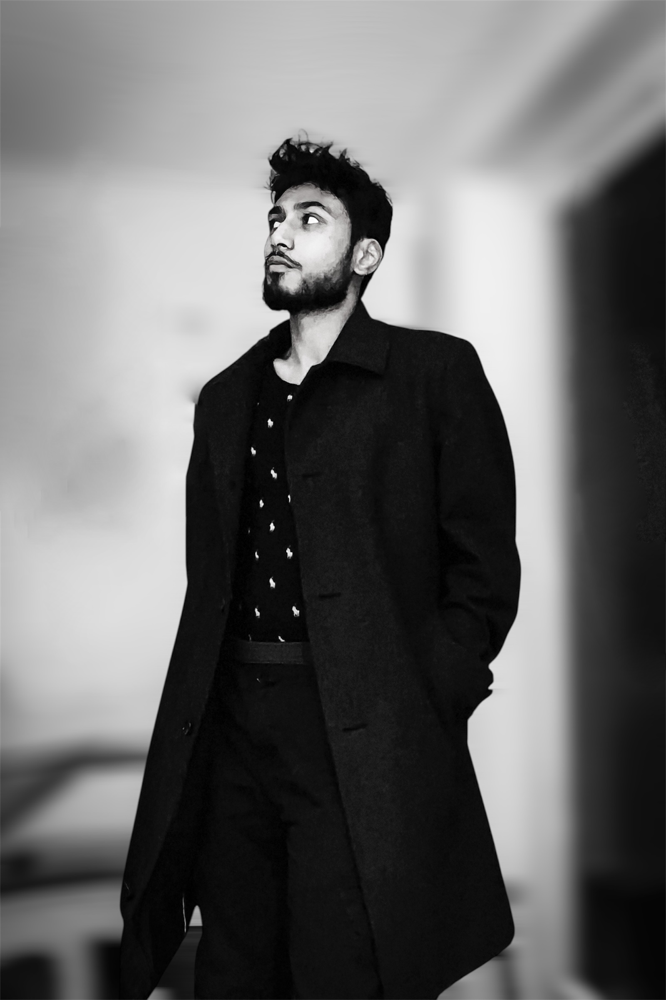

Ikram Choudhury
I work with marine scientists across Europe to solve environmental challenges using AI.
Previously I worked as a data consultant and had the privilege of writing a little production code for British Airways…
…which I did after finishing my MSc in Space Engineering — note that this is different to Aerospace Engineering, which I did for my undergraduate degree.
During my adolescence I spent my summers creating comics using 3D animation tools and CAD, which inadvertently taught me UI design…
…but since last summer I've been solo travelling across the UK (and Istanbul).
I've written several informal blogs on AI, including an overview of my research method.
CAD Gallery
A small gallery of renders from those CAD experiments.
Contact
You can contact me on: